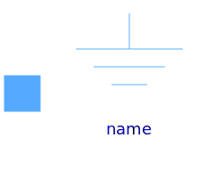
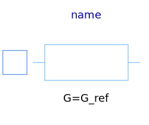
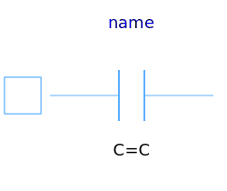
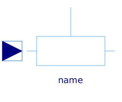

This package hosts basic models for quasi stationary single phase circuits. Quasi stationary theory for single phase circuits can be found in the references.
| Name | Description |
|---|---|
|  Ground | Electrical ground |
|
|
Singlephase linear resistor |
|  Conductor | Singlephase linear conductor |
|  Capacitor | Singlephase linear capacitor |
|
|
Singlephase linear inductor |
|
|
Singlephase variable resistor |
|  VariableConductor | Singlephase variable conductor |
|
|
Singlephase variable capacitor |
| VariableInductor | Singlephase variable inductor |